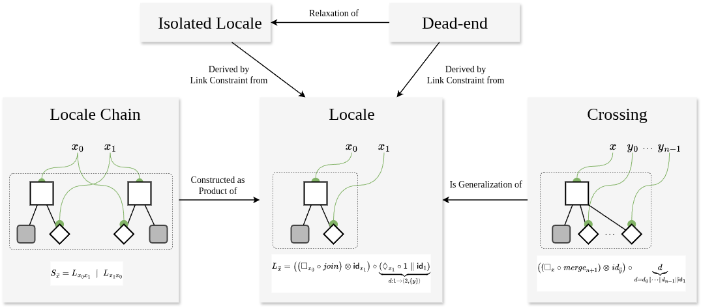
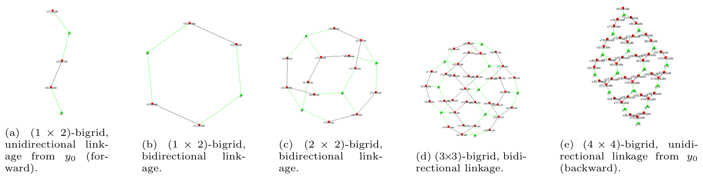

Introduction to Bigraphical Models for Algebraic Swarm Equations
Wait—equations for drones?
Yes—algebraic equations, but with a twist: they come with visual notations built from (bi)graphical structures.
This might sound abstract, but it makes a lot of sense when working with systems like drones—where agents operate in space, and their behaviors are deeply tied to both geometry and topology. Algebra isn't just about numbers; it's also a language for structure, and when applied visually, it becomes a useful tool for modeling collective drone behaviors.
Algebraic Spaces
By using algebraic models that are inherently visual—such as bigraphs—we can describe both how drones behave and how they relate spatially to one another and to their environment.
Simply speaking, bigraphs are a type of graph that can represent both spatial and temporal relationships.
The foundation of UniAgent relies on several so-called bigrid axioms. These are illustrated below and serve as fundamental algebraic building blocks for defining the connectedness between dimensionless local, discrete spaces.
 This figures presents an overview of the bigrid axioms.
Read more about it here: A Bigraphical Framework for Modeling and Simulation of UAV-based Inspection Scenarios
Examples
The following figures illustrate exemplary topological structures built from this “syntax of space” (which are formalized using our bigraphical axioms):

Bigraphical Models
The following pages explore drone equations through the lens of bigraphical reactive systems (BRS)—a form of graphical, rule-based system. These systems are evolutionary and causally closed, providing a modular framework for modeling dynamic interactions.
BRSs allow representing and reasoning about dynamic, spatially organized systems. Discrete states are expressed as algebraic equations. The equations are expressed in terms of bigraphs. A BRS easily captures the relational and reactive nature of agent interactions in a structured and visually intuitive way.
What is also explored is how composition can be used to manage high-level, macroscopic, and emergent behaviors within drone swarms.
To ensure correctness, the equations are formally verified using formal methods (i.e., directed model checking techniques), where swarm programs are primarily formulated as reachability problems.
For reproducibility, we provide the initial conditions, rule sets, and correctness properties to help you replicate the results and re-verify the system's behavior.
It is noteworthy that the proof method constitutes not merely a formal verification technique, but also the primary approach for actual execution.